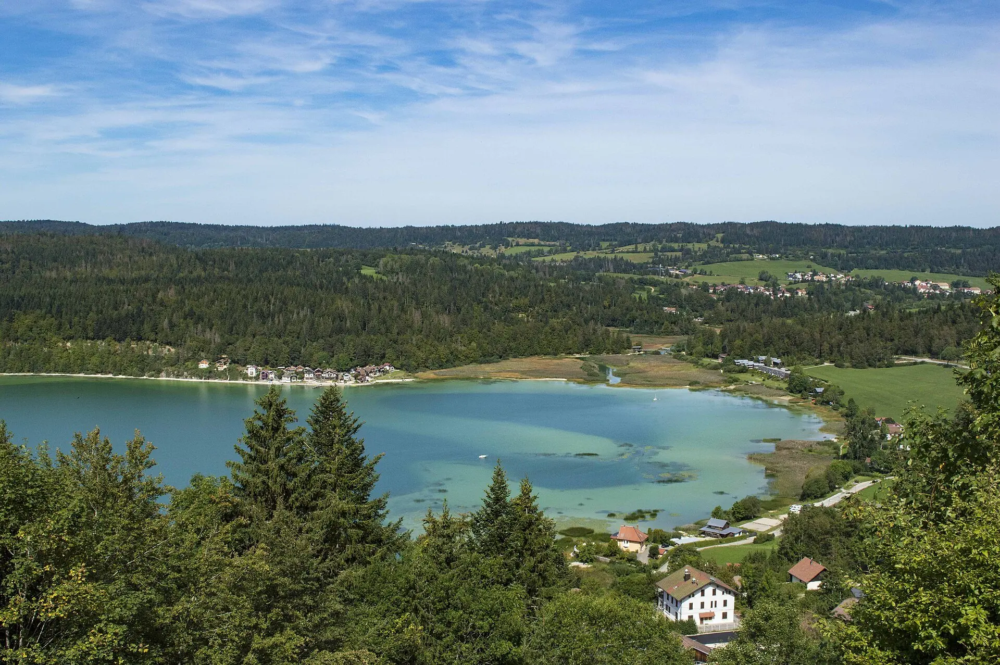
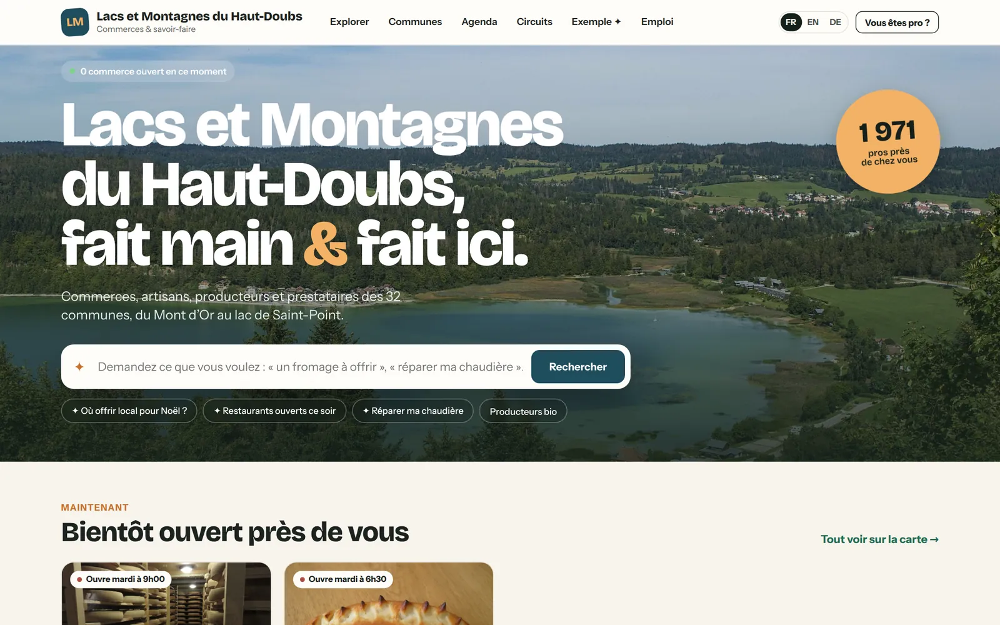
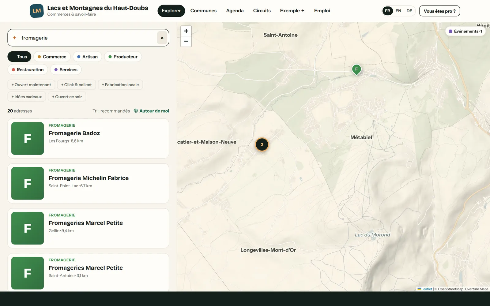
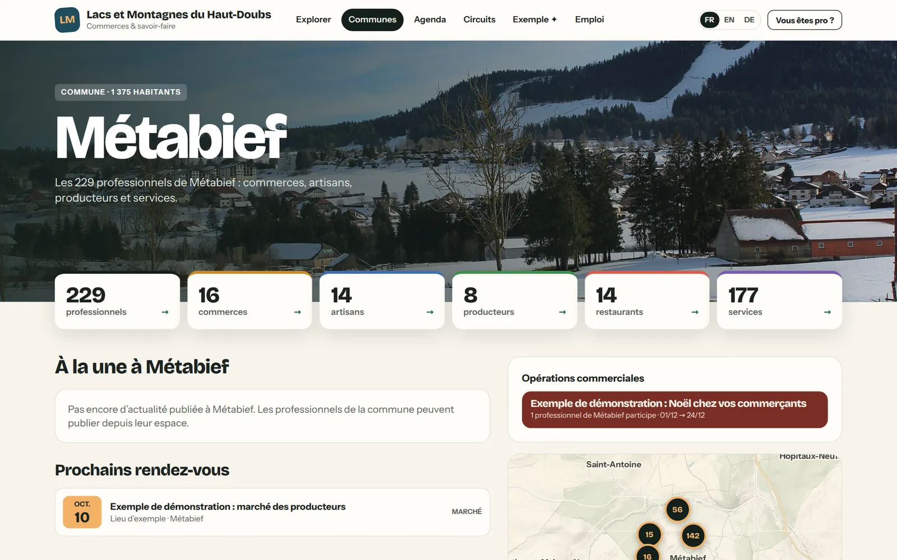
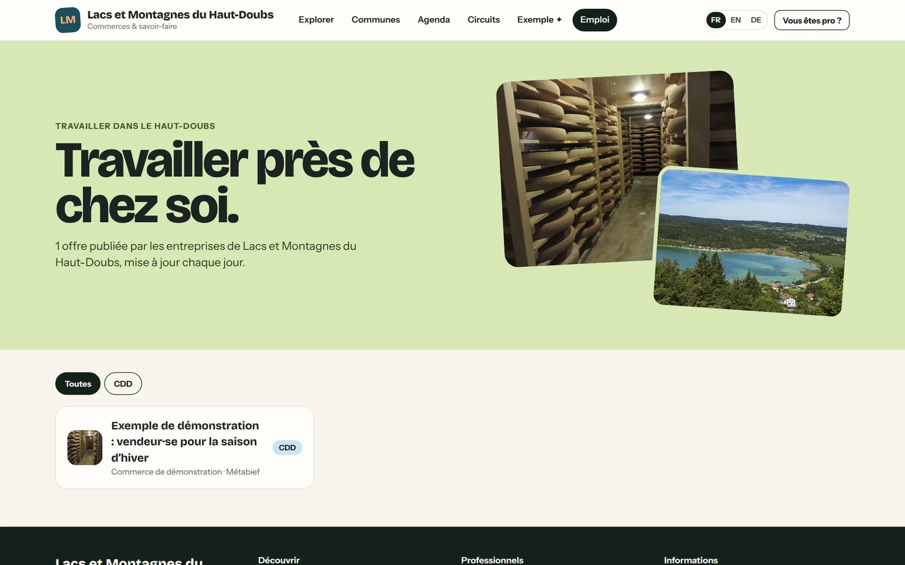
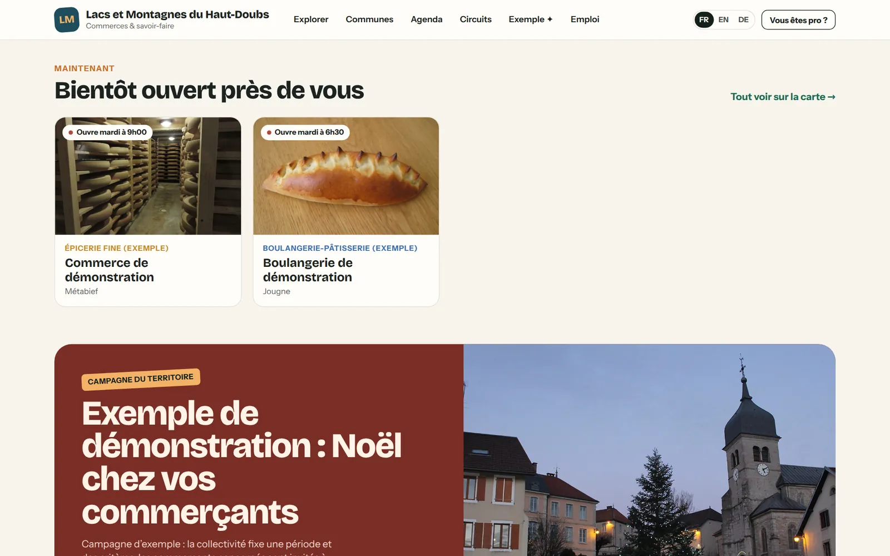

Voyez-le sur un vrai territoire.
Pas de maquette, pas de commerces imaginaires : pour vous montrer terricom tel qu’il sera chez vous, nous l’avons construit sur un territoire réel, les Lacs et Montagnes du Haut-Doubs, avec les entreprises de leurs 32 communes. Votre démonstration, elle, sera construite sur votre territoire, où qu’il soit en France.

Données publiques SIRENE (Insee) de septembre 2026. Démonstration réalisée à titre d’illustration, sans engagement de la communauté de communes des Lacs et Montagnes du Haut-Doubs. Les seuls contenus d’exemple (« … de démonstration ») sont signalés comme tels.
Ce que voient les habitants.


La carte, jusqu’au détail des villages : ici, les fromageries autour de Métabief.

Métabief : 229 professionnels, dont 16 commerces et 14 artisans.

« Travailler près de chez soi » : les offres des entreprises locales.

« Ouvert près de vous » et la campagne du moment, dès l’accueil.
Une minute cinquante-quatre pour tout comprendre.
Le tableau de bord de la communauté de communes.
Une campagne de Noël préparée à partir d’une phrase.
Un commerce publie sur tous ses canaux en une phrase.
Nous la préparons sur votre territoire.
Indiquez-nous votre collectivité : nous construisons un portail avec vos communes, vos entreprises et votre carte, puis nous vous le présentons en trente minutes, en visioconférence ou dans vos locaux.
- Une démonstration personnelle, visible par vous seuls, pendant trente jours.
- Les chiffres de votre territoire : entreprises par commune et par activité.
- Une note de présentation pour vos élus, si vous le souhaitez.
- Sans engagement, et sans démarchage de vos entreprises.